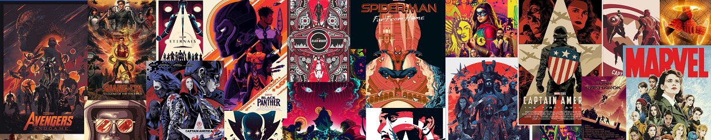
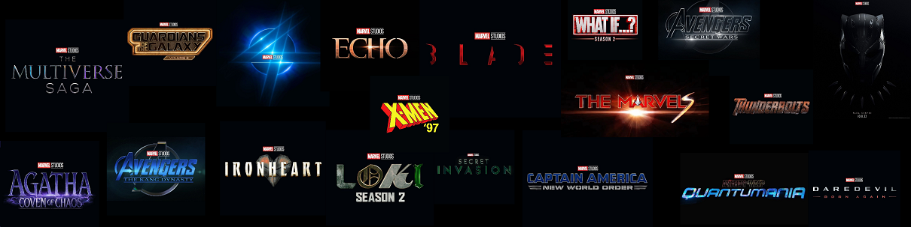

Filmes dessa fase:
- Homem de Ferro(2008)
- Homem de Ferro 2(2010)
- Thor(2011)
- Capitão América: O Primeiro Vingador(2011)
- Os Vingadores(2012)


HISTÓRIA DA MARVEL:
Marvel Comics é uma editora americana de histórias em quadrinhos. Fundada no começo da década de 1930 por Martin Goodman, a Marvel Comics foi originalmente chamada de Timely Comics.
A primeira publicação só aconteceria em 1939 através de uma revista chamada Marvel Comics que mostrou pela primeira vez ao público os personagens Tocha Humana e Namor. A publicação foi um sucesso de vendas e estimulou a equipe responsável a lançar a segunda edição no ano seguinte, mas com o nome de Marvel Mystery Comics.
Na década de 1940, Jack Kirby e Joe Simon formaram a dupla da ainda Timely Comics que daria origem ao primeiro herói patriota, o Capitão América. Sua primeira aparição foi em março de 1941 e fez circular quase um milhão de exemplares.
Jack Kirby e Stan Lee foram responsáveis pela criação do Quarteto Fantástico. O sucesso foi tão grande que estimulou a criação de outros heróis na mesma década, com destaque para o Homem-Aranha, de Stan Lee e Steve Ditko.
A Marvel Comics tornou-se diferenciada no mercada de editoras de histórias em quadrinhos por apresentar histórias mais próximas da realidade, seus personagens eram muito originais, diferenciados e bem trabalhados. Stan Lee foi um dos roteiristas que mais se destacou na história da Marvel Comics, o que lhe rendeu o posto de diretor da empresa por longos anos.
Após muitas décadas, a Marvel Comics firmou-se como a principal editora de histórias em quadrinho dos Estados Unidos. Atualmente, a principal concorrente é a D.C. Comics, mas esta está muito abaixo da Marvel em número de vendas. A Marvel Comics gerou um mito da cultura popular, Stan Lee (1922-2018). No século XXI, a Marvel Comics criou também uma linha editorial para adolescentes mais velhos, a Marvel Knights, e uma para adultos, a MAX. A empresa cresceu substancialmente com a parceria estabelecida com Holywood. Até que, em 2009, a Marvel Entertainment foi comprada pela Walt Disney Company por quatro bilhões de dólares. O catálogo da Marvel possui cerca de cinco mil personagens, sendo que entre os mais famosos estão, Hulk, Homem-Aranha, Capitão América, Demolidor, Thor, Homem de Ferro, o Quarteto Fantástico e os X-Men.
Link de alguns quadrinhos da Marvel:
Clique aquiLink para os filmes e séries da Marvel:
Clique AquiOS 6 ORIGINAIS
| PERSONAGEM | ATOR | FILME E SÉRIE |
| Homem de Ferro (Tony Stark) | Robert Downey Jr. | Homem de Ferro 1,2,3 |
| Thor (Thor Odinson) | Chris Hemsworth | Thor, Thor: o mundo sombrio, Thor ragnarok, Thor: Amor e trovão |
| Viúva Negra (Natasha Romanoff) | Scarlett Johansson | Viúva Negra |
| Hulk | Mark Ruffalo | Não possui filme próprio |
| Capitão América (Steve Rogers) | Chris Evans | Capitão América: O Primeiro Vingador, Capitão América: Soldado Invernal, Capitão América: Guerra Civil |
| Gavião Arqueiro (Clint Barton) | Jeremy Renner | Gavião Arqueiro |
FASES DA MARVEL
Fase 1(2008 a 2012)
A primeira fase, foi a porta de entrada para a história dos Vingadores e a introdução dos personagens principais da UCM (Homem de ferro, Hulk, Capitão América, Thor, Viúva Negra e Gavião Arqueiro). E também foi o início da Saga do infinito.
Filmes dessa fase:
Fase 2 (2013 a 2015)
A segunda fase se concentra nas conquistas após a Batalha de Nova York dos Vingadores e da SHIELD, e também apresenta mais heróis, como: Falcão, Wanda, Visão, Homem-formiga e os Guardiões da Galáxia. E ainda explica a origem das Joias do Infinito. É mostrado a batalha contra o Ultron.
Filmes dessa fase:

Fase 3 (2016 a 2019)
Após a batalha de Ultron, gera uma discordância entre os heróis do UCM, formando a Guerra civil e dividindo os Vingadores. Em meio a tudo isso, chegam novos personagens como: Doutor Estranho, Pantera Negra, Mantis, Homem-Aranha, Valquíria e Capitã Marvel. E o plano do Thanos termina nessa fase.
Filmes dessa fase:

Fase 4 (2021 a ?)
Sem seus principais líderes e um mundo afetado após o Blip, os Vingadores vão precisar se reinventar. Com isso, o Universo Cinematográfico Marvel irá ousar em diversas produções.E um dos principais conceitos que deverá permear tudo é o Multiverso, que vai explorar a possibilidade de que várias dimensões paralelas coexistem, cada uma com sua variável e suas realidades.
Filmes e séries dessa fase:

NOVIDADES DA MARVEL
Durante um evento que aconteceu em San Diego (San Diego Comic-Con 2022) foram apresentados diversas produções que irão lançar futuramente nos próximos anos e serão disponibilizados no Disney+ e nos cinemas. Incluindo trailers das próximas produções que encerrarão a Fase 4, como Mulher-Hulk: Defensora de Heróis e Pantera Negra: Wakanda Para Sempre, como também os filmes, datas e detalhes das produções que irão compor a Fase 5 e Fase 6. Kevin Feige(presidente da Marvel Studios) revelou durante a Comic-Con que, assim como as Fases 1, 2 e 3 faziam parte da Saga do Infinito, as Fases 4, 5 e 6 farão parte da Saga do Multiverso, que terá Kang como um dos grandes vilões e que será encerrada em 2025 com dois filmes da franquia Vingadores.
Valem a espera:
